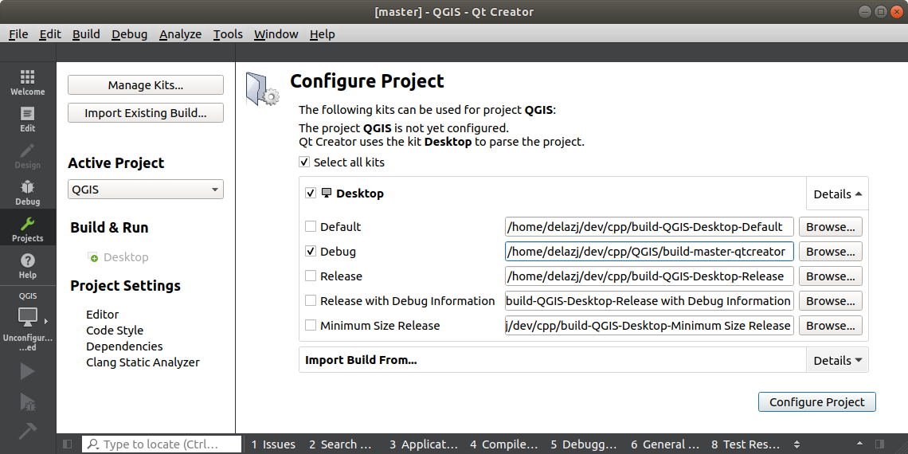
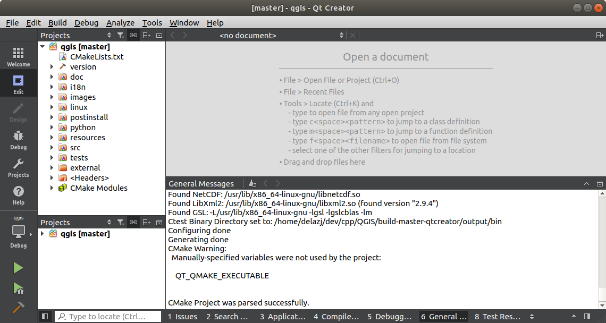
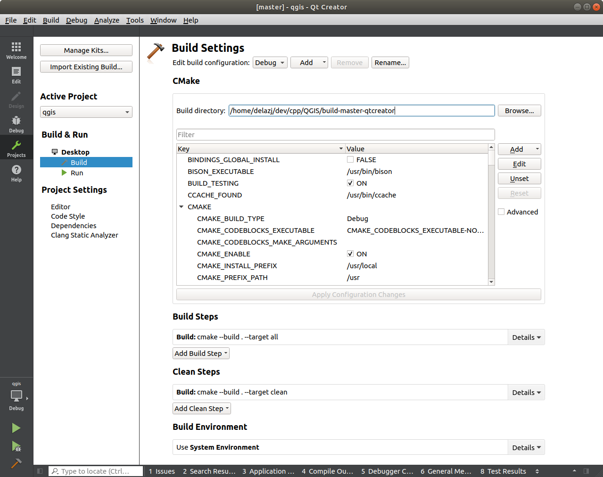
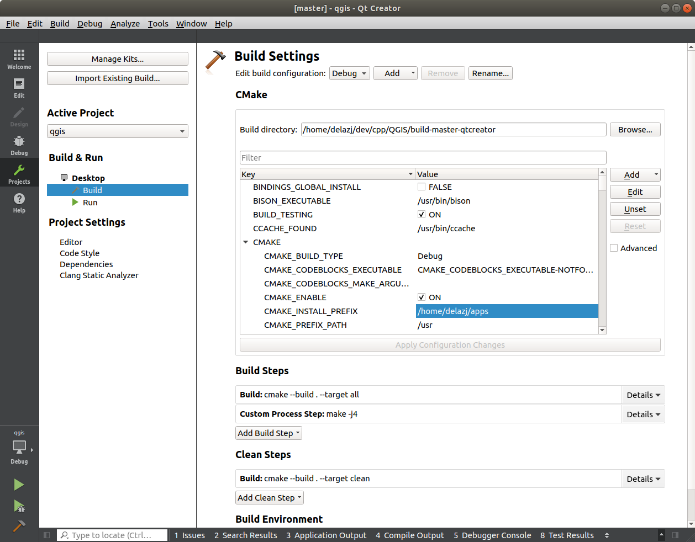

4. Getting up and running with QtCreator and QGIS
QtCreator is an IDE from the makers of the Qt library. With QtCreator you can build any C++ project, but it’s really optimised for people working on Qt based applications (including mobile apps).
4.1. Installing QtCreator
Qt Creator is available on all major platforms and can be downloaded from https://www.qt.io/download (Go the open source route). The installation procedure depends on your platform.
If you are running a Unix-like platform, you can use the command line, eg on Debian:
sudo apt install qtcreator qtcreator-doc
After installing you should find it in your menu.
4.2. Setting up your project
We assume you have already got a local QGIS clone containing the source code, and have installed all needed build dependencies etc. There are detailed instructions for git access and dependency requirements.
On our system we have checked out the code into $HOME/dev/cpp/QGIS and the
rest of the article is written assuming that. You should update these paths as
appropriate for your local system.
After launching QtCreator do
Then use the resulting file selection dialog to browse to and open this file:
$HOME/dev/cpp/QGIS/CMakeLists.txt
QtCreator will parse the project and you will be prompted for a build location and options in the Configure Project dialog.
Since we want QGIS to have debugging capabilities we will only enable the debug entry and fill it with our build location:
Check
 Select all kits enabling the Desktop
entry
Select all kits enabling the Desktop
entryUncheck all but the
Debug sub itemFill the path with the build directory. For our purpose, we create a specific build dir for QtCreator:
$HOME/dev/cpp/QGIS/build-master-qtcreatorIt’s probably a good idea to create separate build directories for different branches if you can afford the disk space.

{kind=link}
That’s the basics of it. Press the Configure Project button and QtCreator will start scanning the source tree for autocompletion support and do some other housekeeping stuff in the background.
{kind=link}
We want to tweak a few things before we start to build.
4.3. Setting up your build environment
Click on the Projects icon on the left of the QtCreator window.

Select the Build settings tab (normally active by default).
The dialog shows the Debug build configuration and allows you to
edit settings under the CMake section. While the default
configuration should be enough for a first pass, depending on your needs,
you may want to enable more features such as:
WITH_3D = ON for 3D rendering
WITH_CUSTOM_WIDGETS = ON to add QGIS custom widgets for interface design
Press Apply Configuration Changes.
You are now ready to build. Press the Build button at the left bottom of the dialog (or Ctrl+B) to launch the project build! Qt Creator will begin compiling and this may take some time the first time, depending on your device.
At the end of the compilation, you can run QGIS by pressing the Run button.
The compilation of QGIS also generates binaries in the build directory. Hence you can execute QGIS from the command line using:
cd $HOME/dev/cpp/QGIS/build-master-qtcreator
./output/bin/qgis
Sometimes you may want to install QGIS as an executable, outside the build directory.
Set the
CMAKE_INSTALL_PREFIXto somewhere you have write access to (we use$HOME/apps). This would avoid overwriting an existing QGIS installs (by your package manager for example).Press Apply Configuration Changes to update the settings
Press the button
When the build is complete, you’ll find the
qgisexecutable in the$HOME/apps/binfolder.
4.4. Running and debugging
Now you are ready to run and debug QGIS. To set a break point, simply open a source file and click in the left column.

Now launch QGIS under the debugger by clicking the Start Debugging in the bottom left of the window.